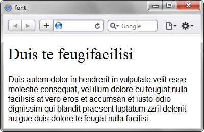

font
Универсальное свойство, которое позволяет одновременно задать несколько характеристик шрифта и текста.
Краткая информация
| Значение по умолчанию | Зависит от использования |
|---|---|
| Наследуется | Да |
| Применяется | Ко всем элементам |
Синтаксис
font: [font-style||font-variant||font-weight] font-size [/line-height] font-familyЗначения
В качестве обязательных значений свойства font указывается размер шрифта и его семейство. Остальные значения являются опциональными и задаются при желании. Для подробного ознакомления смотрите информацию о каждом свойстве отдельно.
Допускается в качестве значения использовать ключевые слова, определяющие шрифт различных элементов операционной системы пользователя.
- caption
- Шрифт для текста элементов форм вроде кнопок.
- icon
- Шрифт для текста под иконками.
- menu
- Шрифт применяемый в меню.
- message-box
- Шрифт для диалоговых окон.
- small-caption
- Шрифт для подписей к небольшим элементам управления.
- status-bar
- Шрифт для строки состояния окон.
Пример
p { font: 12pt/10pt sans-serif; } Из типографики пошла запись указывать через слэш размер шрифта и межстрочное расстояние (интерлиньяж). Поэтому 12pt в данном случае означает размер основного текста в пунктах, а 10pt — интерлиньяж. В качестве семейства указывается рубленый шрифт (sans-serif).
p { font: bold italic 110% serif; }Значение bold устанавливает жирное начертание текста, а italic — курсивное. В данном случае их порядок не важен, поэтому bold и italic можно поменять местами. Размер текста задается в процентах, а в качестве гарнитуры используется шрифт с засечками (serif).
p { font: normal small-caps 12px/14px fantasy; }Значение small-caps принадлежит свойству font-variant и устанавливает текст в виде капители (заглавные буквы уменьшенного размера). Значение normal применяется сразу к двум свойствам: font-style и font-weight.
<!DOCTYPE html>
<html>
<head>
<meta charset="utf-8">
<title>font</title>
<style>
.layer1 {
font: 12pt sans-serif;
}
h1 {
font: 200% serif;
}
</style>
</head>
<body>
<div class="layer1">
<h1>Duis te feugifacilisi</h1>
Duis autem dolor in hendrerit in vulputate velit esse molestie consequat, vel
illum dolore eu feugiat nulla facilisis at vero eros et accumsan et iusto odio
dignissim qui blandit praesent luptatum zzril delenit au gue duis dolore te
feugat nulla facilisi.
</div>
</body>
</html>Результат данного примера показан на рис. 1.

Рис. 1. Применение свойства font
Объектная модель
Объект.style.font
Спецификация
| Спецификация | Статус |
|---|---|
| CSS Fonts Module Level 3 | Возможная рекомендация |
| CSS Level 2 (Revision 1) | Рекомендация |
| CSS Level 1 | Рекомендация |
Браузеры
| Internet Explorer | Chrome | Opera | Safari | Firefox |
| 4 | 1 | 6 | 1 | 1 |
| Android | Firefox Mobile | Opera Mobile | Safari Mobile |
| 1 | 1 | 6 | 1 |